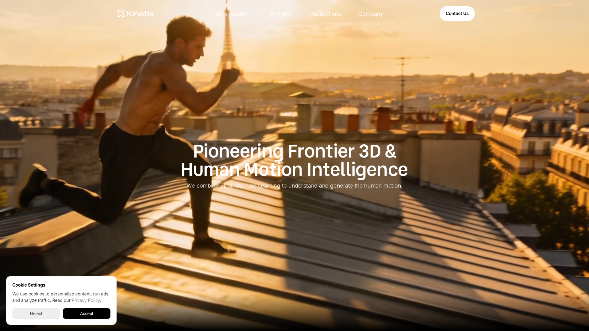

法國 AI 動畫公司，提供 SDK 讓玩家在遊戲內用影片生成自訂 3D 表情動作（emotes），B2B 遊戲開發平台。
| 開發者 | Kinetix（法國） |
|---|---|
| 類型 | B2B 遊戲 SDK |
| 價格 | 企業授權（定價不透明） |
| 官網 | kinetix.tech |
3D 動畫透過 SDK 直接在 Unity/Unreal 中使用。非獨立檔案匯出工具。
| 優點 | 缺點 |
|---|---|
| 遊戲內 UGC 生態 | B2B 模式，非直接可用 |
| 跨平台 SDK | 需完整 SDK 整合 |
| AI text-to-animation | 定價不透明 |
| 完整玩家體驗設計 | 依賴雲端 API |
定位不同——Kinetix 面向終端玩家 UGC，Kimodo 面向開發者量產。直接整合可能性低，但可作為品質 benchmark 與市場參考。
競品觀察與市場參考——研究業界 AI 動畫產品化方向，不直接進入量產 pipeline。